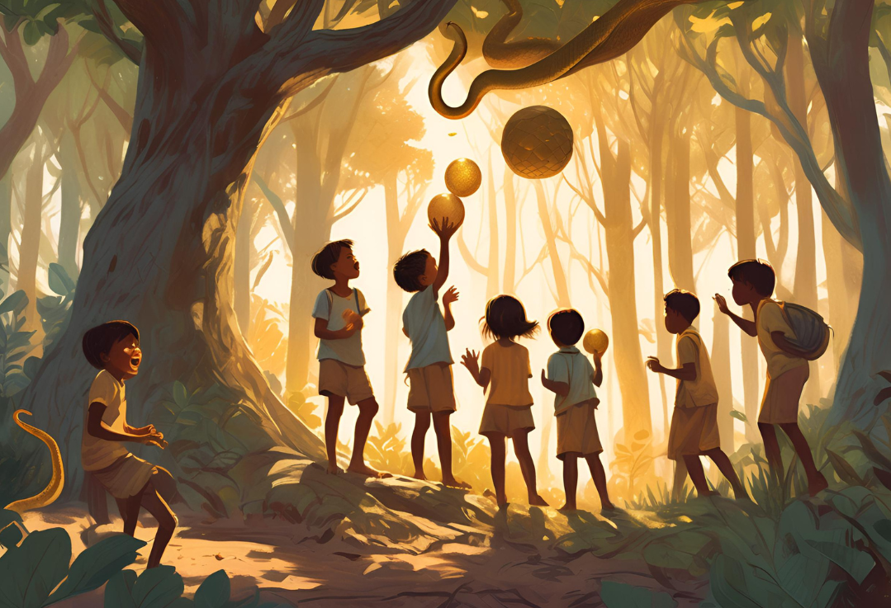
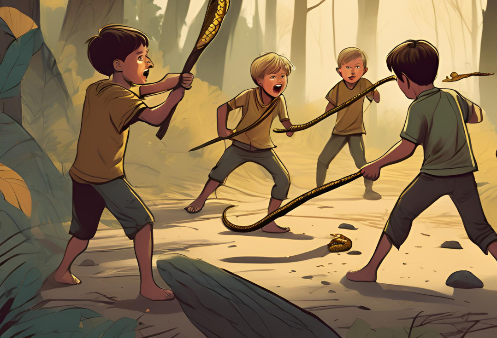
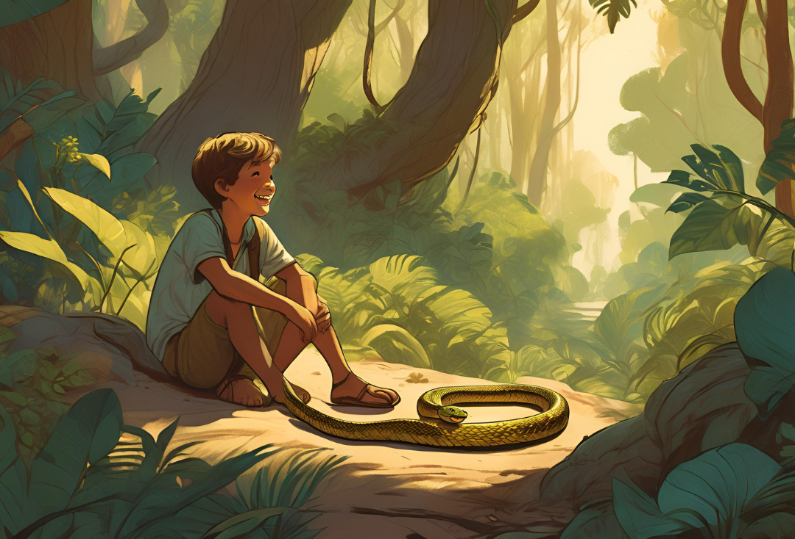
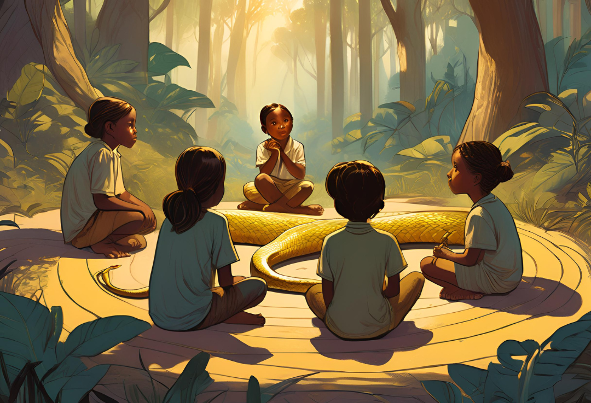

Capítulo 1
En un pequeño pueblo, los niños solían jugar cerca de un denso bosque. Un día, mientras exploraban, encontraron una serpiente dorada descansando entre las hojas. Al principio, se quedaron fascinados por su brillo, pero pronto el miedo se apoderó de ellos.
Capítulo 2
- “¡Es peligrosa!” gritó uno de los niños. Sin pensarlo dos veces, comenzaron a lanzarle piedras y a golpearla con palos. La serpiente, herida y asustada, intentó escapar, pero los niños no se detenían. Finalmente, la serpiente, cansada de ser atacada, se volvió hacia ellos y les dijo: “No soy tu enemiga. Solo quiero vivir en paz. Si me dejas en paz, no te haré daño”. Pero los niños, llenos de temor y miedo, continuaron su ataque.
Capítulo 3
Un día, uno de los niños se acercó a la serpiente y le pidió ayuda para encontrar un objeto perdido en el bosque. La serpiente, recordando el dolor que le habían causado, se mostró reticente, pero decidió ayudarlo. Juntos, buscaron hasta que encontraron el objeto.
Agradecido, el niño comprendió que la serpiente no era su enemiga, y se disculpó por su comportamiento. A partir de entonces, los niños aprendieron a respetar a la serpiente, y ella, a su vez, los protegió de otros peligros en el bosque.
Moraleja
La fábula nos enseña que el miedo y la ignorancia pueden llevar a la violencia, pero la comprensión y el respeto pueden construir puentes y fomentar la paz.